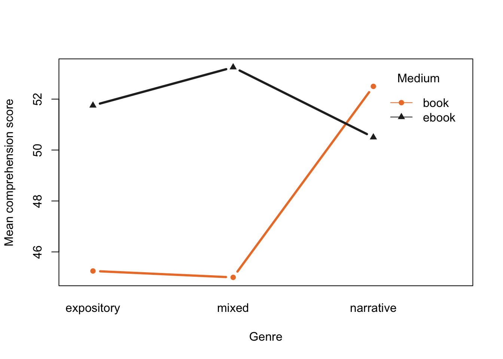

What Is a Mixed ANOVA?
A mixed factorial ANOVA — sometimes called a split-plot ANOVA — combines features of the two designs you have already seen:
- A between-subjects factor: different participants appear in each level (like the two-way ANOVA in Script 7)
- A within-subjects factor: the same participants appear at every level (like the repeated-measures ANOVA in Script 6)
The word “mixed” refers to the fact that the design is a mixture of these two structures — not to any mixing of data values.
The Study
Researchers examined how reading medium (book vs. e-book) and text genre (narrative, expository, mixed) affect reading comprehension scores. Eight participants were randomly assigned to read either physical books (book) or e-readers (ebook). Each participant then read and was tested on all three genre types.
| Factor | Type | Levels |
|---|---|---|
| Medium | Between-subjects | book, ebook |
| Genre | Within-subjects | narrative, expository, mixed |
Because medium is between-subjects, the four book readers are entirely different people from the four ebook readers. Because genre is within-subjects, every participant was tested on all three genre types.
Setup
library(psych)
library(emmeans)Welcome to emmeans.
Caution: You lose important information if you filter this package's results.
See '? untidy'library(effectsize)
Attaching package: 'effectsize'The following object is masked from 'package:psych':
phimixed.data <- read.csv("mixed.data.csv")
mixed.data$medium <- factor(mixed.data$medium)
mixed.data$genre <- factor(mixed.data$genre)
mixed.data$subjects <- factor(mixed.data$subjects)
str(mixed.data)'data.frame': 24 obs. of 5 variables:
$ X : int 1 2 3 4 5 6 7 8 9 10 ...
$ medium : Factor w/ 2 levels "book","ebook": 1 1 1 1 1 1 1 1 1 1 ...
$ genre : Factor w/ 3 levels "expository","mixed",..: 3 3 3 3 1 1 1 1 2 2 ...
$ score : int 48 55 46 61 40 43 45 53 38 45 ...
$ subjects: Factor w/ 8 levels "Arya","Brienne",..: 1 2 3 4 1 2 3 4 1 2 ...The dataset is in long format: each row is one observation (one participant at one genre condition). With 8 participants × 3 genre conditions, there are 24 rows total.
Descriptive Statistics
# Cell means: medium × genre
desc <- describeBy(score ~ medium + genre, data = mixed.data, mat = TRUE)
desc[, c("group1", "group2", "n", "mean", "sd", "se")] group1 group2 n mean sd se
score1 book expository 4 45.25 5.560276 2.780138
score2 ebook expository 4 51.75 4.991660 2.495830
score3 book mixed 4 45.00 6.164414 3.082207
score4 ebook mixed 4 53.25 4.349329 2.174665
score5 book narrative 4 52.50 6.855655 3.427827
score6 ebook narrative 4 50.50 5.567764 2.783882# Marginal means
describeBy(score ~ medium, data = mixed.data, mat = TRUE)[, c("group1", "n", "mean", "sd")] group1 n mean sd
score1 book 12 47.58333 6.694072
score2 ebook 12 51.83333 4.667749describeBy(score ~ genre, data = mixed.data, mat = TRUE)[, c("group1", "n", "mean", "sd")] group1 n mean sd
score1 expository 8 48.500 6.000000
score2 mixed 8 49.125 6.621124
score3 narrative 8 51.500 5.879747Ebook readers scored slightly higher on average (M = 51.83) than book readers (M = 47.58). Among genres, narrative texts had the highest average scores (M = 51.50), followed by mixed (M = 49.13) and expository (M = 48.50). But the interaction plot below will show that these averages tell only part of the story.
Interaction Plot
interaction.plot(mixed.data$genre, mixed.data$medium, mixed.data$score,
type = "b", lwd = 3, pch = c(16, 17), lty = 1,
col = c("#ED7D31", "#262626"),
xlab = "Genre",
ylab = "Mean comprehension score",
trace.label = "Medium")
The two lines are not parallel — the gap between book and ebook readers is much larger for some genre conditions than others. Book readers score noticeably lower on expository and mixed texts compared to ebook readers, but the two groups are more similar on narrative texts. This non-parallel pattern is the visual signature of an interaction.
The Mixed ANOVA Model
The model formula includes both the main effects and their interaction. The Error() term is the key addition for mixed designs. It tells R about the two separate error strata:
subjects— the between-subjects error (variance among individuals assigned to different media)subjects:genre— the within-subjects error (how much a person’s scores vary across genre conditions)
mixed.anova <- aov(score ~ medium * genre + Error(subjects/genre),
data = mixed.data)
summary(mixed.anova)
Error: subjects
Df Sum Sq Mean Sq F value Pr(>F)
medium 1 108.4 108.37 1.227 0.31
Residuals 6 529.9 88.32
Error: subjects:genre
Df Sum Sq Mean Sq F value Pr(>F)
genre 2 40.08 20.04 5.681 0.018366 *
medium:genre 2 120.25 60.13 17.043 0.000312 ***
Residuals 12 42.33 3.53
---
Signif. codes: 0 '***' 0.001 '**' 0.01 '*' 0.05 '.' 0.1 ' ' 1Reading the two error tables: The output shows two sections. The Error: subjects table tests the between-subjects effect (medium). The Error: subjects:genre table tests the within-subjects effects (genre and the medium × genre interaction). Each effect is tested against the appropriate error term for its design type.
Interpreting the Results
| Effect | F | df | p |
|---|---|---|---|
| Medium (between) | 1.23 | 1, 6 | .31 |
| Genre (within) | 5.68 | 2, 12 | .018 |
| Medium × Genre | 17.04 | 2, 12 | < .001 |
The main effect of medium is not significant — book and ebook readers do not differ overall. The main effect of genre is significant — comprehension scores differ across text types on average. But both of these main effects are qualified by the significant medium × genre interaction, F(2, 12) = 17.04, p < .001. When an interaction is significant, the main effects cannot be interpreted in isolation. We need to examine the simple effects: how genre operates separately within each medium, and how medium operates separately within each genre.
Effect Sizes: Generalized Eta Squared
eta_squared(mixed.anova, generalized = TRUE)# Effect Size for ANOVA (Type I)
Group | Parameter | Eta2 (generalized) | 95% CI
-----------------------------------------------------------------
subjects | medium | 0.16 | [0.00, 1.00]
subjects:genre | genre | 0.07 | [0.00, 1.00]
subjects:genre | medium:genre | 0.17 | [0.00, 1.00]
- Observed variables: All
- One-sided CIs: upper bound fixed at [1.00].For mixed designs, generalized eta squared (η²_G) is the preferred effect size. Unlike partial eta squared, it accounts for variability from all sources in the design and is comparable across studies that use different designs. Here, the interaction accounts for approximately 17% of the total variance in comprehension scores.
Simple Effects: Genre Within Each Medium
Because the interaction is significant, we follow up by examining how genre affects scores separately for book readers and for ebook readers.
Book Readers
book.data <- subset(mixed.data, medium == "book")
post.book <- aov(score ~ genre + Error(subjects/genre), data = book.data)
summary(post.book)
Error: subjects
Df Sum Sq Mean Sq F value Pr(>F)
Residuals 3 309.6 103.2
Error: subjects:genre
Df Sum Sq Mean Sq F value Pr(>F)
genre 2 145.17 72.58 11.41 0.00902 **
Residuals 6 38.17 6.36
---
Signif. codes: 0 '***' 0.001 '**' 0.01 '*' 0.05 '.' 0.1 ' ' 1eta_squared(post.book, generalized = TRUE)# Effect Size for ANOVA (Type I)
Group | Parameter | Eta2 (generalized) | 95% CI
--------------------------------------------------------------
subjects:genre | genre | 0.29 | [0.00, 1.00]
- Observed variables: All
- One-sided CIs: upper bound fixed at [1.00].emm.book <- emmeans(post.book, "genre")Note: re-fitting model with sum-to-zero contrastsemm.book genre emmean SE df lower.CL upper.CL
expository 45.2 3.11 3.76 36.4 54.1
mixed 45.0 3.11 3.76 36.1 53.9
narrative 52.5 3.11 3.76 43.6 61.4
Warning: EMMs are biased unless design is perfectly balanced
Confidence level used: 0.95 summary(pairs(emm.book, adjust = "tukey"), infer = TRUE) contrast estimate SE df lower.CL upper.CL t.ratio p.value
expository - mixed 0.25 1.78 6 -5.22 5.72 0.140 0.9892
expository - narrative -7.25 1.78 6 -12.72 -1.78 -4.065 0.0156
mixed - narrative -7.50 1.78 6 -12.97 -2.03 -4.205 0.0134
Confidence level used: 0.95
Conf-level adjustment: tukey method for comparing a family of 3 estimates
P value adjustment: tukey method for comparing a family of 3 estimates For book readers, genre has a significant effect, F(2, 6) = 11.41, p = .009, η²_G = .29. The pairwise comparisons reveal:
- Narrative vs. expository: book readers scored significantly higher on narrative (M = 52.5) than expository (M = 45.2) texts, p = .016
- Narrative vs. mixed: book readers scored significantly higher on narrative (M = 52.5) than mixed (M = 45.0) texts, p = .013
- Expository vs. mixed: no significant difference, p = .989
For book readers, narrative texts led to better comprehension; expository and mixed formats were indistinguishable from each other.
E-Book Readers
ebook.data <- subset(mixed.data, medium == "ebook")
post.ebook <- aov(score ~ genre + Error(subjects/genre), data = ebook.data)
summary(post.ebook)
Error: subjects
Df Sum Sq Mean Sq F value Pr(>F)
Residuals 3 220.3 73.44
Error: subjects:genre
Df Sum Sq Mean Sq F value Pr(>F)
genre 2 15.167 7.583 10.92 0.01 *
Residuals 6 4.167 0.694
---
Signif. codes: 0 '***' 0.001 '**' 0.01 '*' 0.05 '.' 0.1 ' ' 1eta_squared(post.ebook, generalized = TRUE)# Effect Size for ANOVA (Type I)
Group | Parameter | Eta2 (generalized) | 95% CI
--------------------------------------------------------------
subjects:genre | genre | 0.06 | [0.00, 1.00]
- Observed variables: All
- One-sided CIs: upper bound fixed at [1.00].emm.ebook <- emmeans(post.ebook, "genre")Note: re-fitting model with sum-to-zero contrastsemm.ebook genre emmean SE df lower.CL upper.CL
expository 51.8 2.5 3.11 44.0 59.5
mixed 53.2 2.5 3.11 45.5 61.0
narrative 50.5 2.5 3.11 42.7 58.3
Warning: EMMs are biased unless design is perfectly balanced
Confidence level used: 0.95 summary(pairs(emm.ebook, adjust = "tukey"), infer = TRUE) contrast estimate SE df lower.CL upper.CL t.ratio p.value
expository - mixed -1.50 0.589 6 -3.308 0.308 -2.546 0.0963
expository - narrative 1.25 0.589 6 -0.558 3.058 2.121 0.1655
mixed - narrative 2.75 0.589 6 0.942 4.558 4.667 0.0082
Confidence level used: 0.95
Conf-level adjustment: tukey method for comparing a family of 3 estimates
P value adjustment: tukey method for comparing a family of 3 estimates For ebook readers, genre also has a significant effect, F(2, 6) = 10.92, p = .010, but the effect size is smaller (η²_G = .06). The pairwise comparisons show:
- Mixed vs. narrative: ebook readers scored significantly higher on mixed (M = 53.2) than narrative (M = 50.5) texts, p = .008
- Expository vs. mixed: marginally non-significant, p = .096
- Expository vs. narrative: not significant, p = .166
The pattern for ebook readers is essentially the reverse of the pattern for book readers — mixed texts led to the highest comprehension scores, and narrative texts were lowest.
This reversal in the direction of the genre effect across the two medium conditions is exactly what the significant interaction was telling us. Book readers comprehend narrative texts best; ebook readers comprehend mixed texts best. No single “best genre” exists when the interaction is present.
Simple Effects: Medium Within Each Genre
We can also flip the analysis and examine how medium affects scores separately within each genre. Because genre is the within-subjects factor, isolating a single genre level gives us a simple between-subjects comparison — we use lm() for this.
Narrative Texts
narrative <- subset(mixed.data, genre == "narrative")
fit.narr <- lm(score ~ medium, data = narrative)
anova(fit.narr)Analysis of Variance Table
Response: score
Df Sum Sq Mean Sq F value Pr(>F)
medium 1 8 8 0.2051 0.6665
Residuals 6 234 39 confint(fit.narr) 2.5 % 97.5 %
(Intercept) 44.85952 60.14048
mediumebook -12.80527 8.80527eta_squared(fit.narr, generalized = TRUE)For one-way between subjects designs, generalized eta squared is
equivalent to eta squared. Returning eta squared.# Effect Size for ANOVA
Parameter | Eta2 (generalized) | 95% CI
---------------------------------------------
medium | 0.03 | [0.00, 1.00]
- Observed variables: All
- One-sided CIs: upper bound fixed at [1.00].For narrative texts, medium has no significant effect, F(1, 6) = 0.21, p = .667, η²_G = .03. Book and ebook readers performed similarly on narrative comprehension.
Expository Texts
expository <- subset(mixed.data, genre == "expository")
fit.expo <- lm(score ~ medium, data = expository)
anova(fit.expo)Analysis of Variance Table
Response: score
Df Sum Sq Mean Sq F value Pr(>F)
medium 1 84.5 84.500 3.0269 0.1325
Residuals 6 167.5 27.917 confint(fit.expo) 2.5 % 97.5 %
(Intercept) 38.785721 51.71428
mediumebook -2.641871 15.64187eta_squared(fit.expo, generalized = TRUE)For one-way between subjects designs, generalized eta squared is
equivalent to eta squared. Returning eta squared.# Effect Size for ANOVA
Parameter | Eta2 (generalized) | 95% CI
---------------------------------------------
medium | 0.34 | [0.00, 1.00]
- Observed variables: All
- One-sided CIs: upper bound fixed at [1.00].For expository texts, the medium effect is not significant, F(1, 6) = 3.03, p = .133, though the effect size is moderate (η²_G = .34). Ebook readers (M = 51.8) scored higher than book readers (M = 45.2), but this difference is not statistically reliable with this sample size.
Mixed-Genre Texts
mixed.genre <- subset(mixed.data, genre == "mixed")
fit.mixed <- lm(score ~ medium, data = mixed.genre)
anova(fit.mixed)Analysis of Variance Table
Response: score
Df Sum Sq Mean Sq F value Pr(>F)
medium 1 136.12 136.125 4.7833 0.07136 .
Residuals 6 170.75 28.458
---
Signif. codes: 0 '***' 0.001 '**' 0.01 '*' 0.05 '.' 0.1 ' ' 1confint(fit.mixed) 2.5 % 97.5 %
(Intercept) 38.4733089 51.52669
mediumebook -0.9801351 17.48014eta_squared(fit.mixed, generalized = TRUE)For one-way between subjects designs, generalized eta squared is
equivalent to eta squared. Returning eta squared.# Effect Size for ANOVA
Parameter | Eta2 (generalized) | 95% CI
---------------------------------------------
medium | 0.44 | [0.00, 1.00]
- Observed variables: All
- One-sided CIs: upper bound fixed at [1.00].For mixed-genre texts, the medium difference is marginal, F(1, 6) = 4.78, p = .071, η²_G = .44. Ebook readers (M = 53.2) outperformed book readers (M = 45.0), and the confidence interval for the ebook–book difference includes zero (95% CI [−1.0, 17.5]), meaning the data are consistent with no difference — but also consistent with a difference as large as 17.5 points. The large effect size despite the non-significant p-value reflects the small sample size (4 per group).
Why use lm() here instead of aov() with an Error() term? When we subset to a single genre level, there is no longer a within-subjects structure — each participant appears in only one row. This is a standard between-subjects comparison, so ordinary lm() is correct. The Error() term is only needed when the same participants appear across multiple rows of the same analysis.
Summary
The mixed factorial ANOVA found a significant medium × genre interaction, F(2, 12) = 17.04, p < .001, η²_G = .17. The effect of genre on comprehension differed depending on reading medium:
- Book readers comprehended narrative texts significantly better than expository or mixed texts
- Ebook readers comprehended mixed texts best, with narrative texts producing the lowest scores among ebook readers
The main effect of medium was not significant overall, but the interaction reveals that ebook readers had an advantage specifically for expository and mixed texts, while book and ebook readers performed similarly on narrative texts.